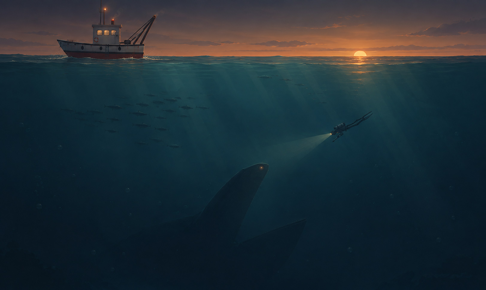
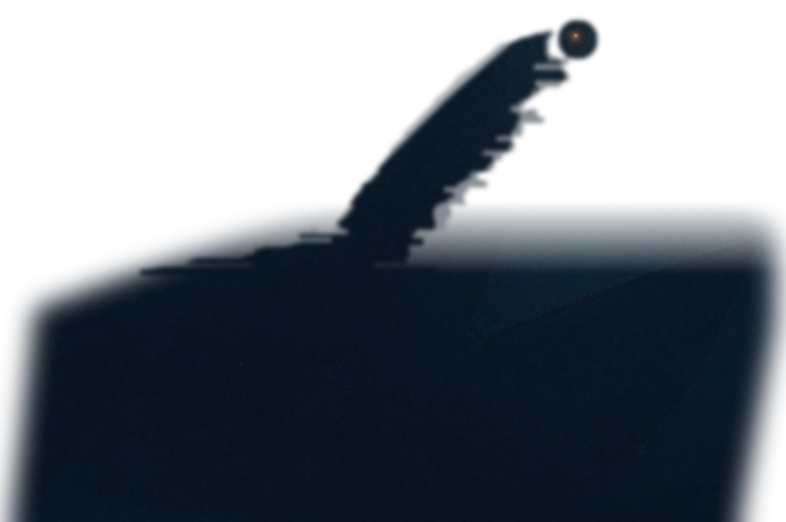
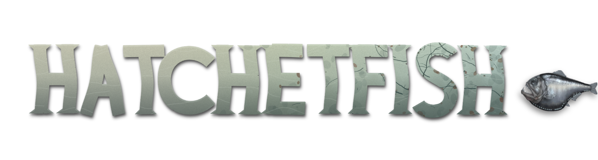
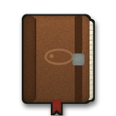
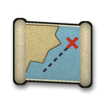

The sea pays, if you look deep enough.Dive and survive to tell the tale.
Headphones recommended.
The water keeps moving while you write.
The yard will paint it on the sub's hull, and on every hull after it.


↑ ↓ or the wheel: 1 m · with Shift: 10 m ·